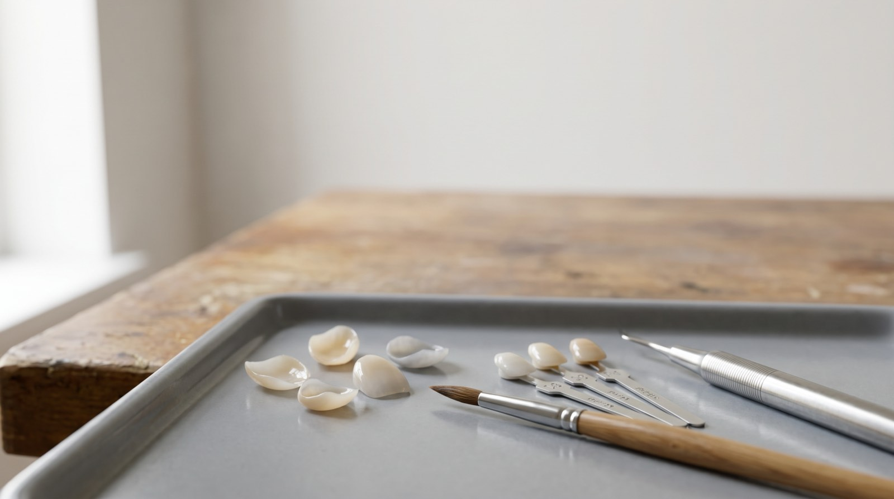
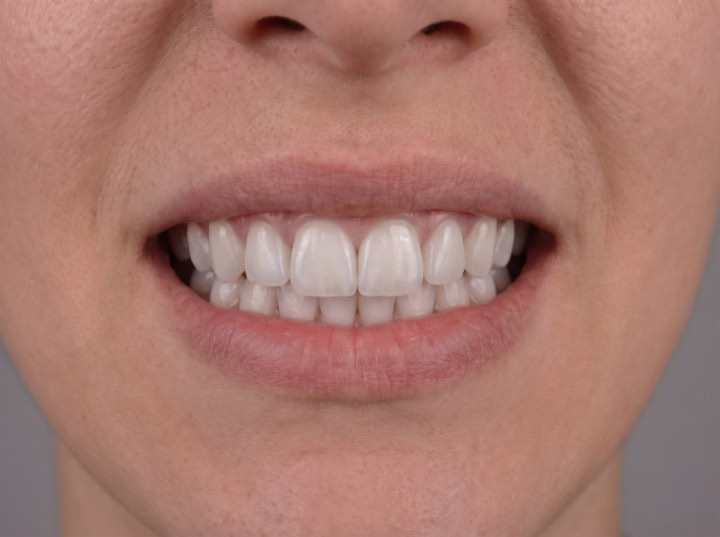
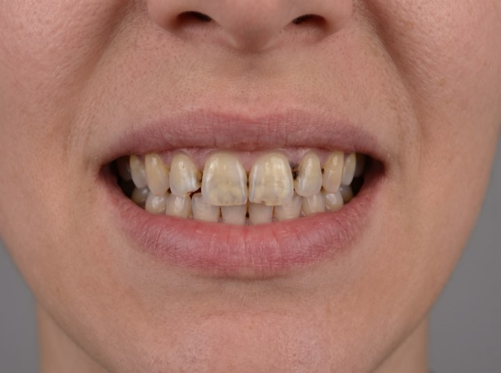

Porcelain veneers
Hand-layered by a master ceramist. You approve a digital preview and a trial smile before a single tooth is prepared.
Veneers · Implants · Full-mouth restoration
A digital preview at the first consult and a trial smile you wear home before anything is prepared. Veneers, implants and full-mouth restoration, adjusted until it looks like you.

Services
Every case starts with the same thing: a scan, a preview, and a written plan with a number on it.
Hand-layered by a master ceramist. You approve a digital preview and a trial smile before a single tooth is prepared.
Single tooth to full arch. Guided placement from a 3D scan, which is why they seat precisely and last.
For wear, bite collapse or years of patchwork dentistry. Planned as one outcome rather than a series of repairs.
The lower-commitment start. Often all somebody actually needs, and we'll say so if that's the case.
Results
Process
No surprises and no moving numbers. You see the outcome and the price before anything is prepared.
3D scan, photographs, and a conversation about what actually bothers you. About an hour.
You see your own result rendered before treatment starts, and we adjust it until you're happy.
A fixed plan with a fixed number, plus monthly options. You take it away and think about it.
Most veneer cases are two visits. We review at six months and you have a direct line throughout.
Before we start
You approve the result on screen before a single tooth is prepared. Drag to compare — nothing here is a stock photograph of somebody else's work.


Most of our patients had. The consult is free, there's no pressure, and you'll leave knowing what it would look like and what it would cost.
Free consultations including the preview. Financing from 0% APR, and nothing is prepared until you have seen the result and said yes.